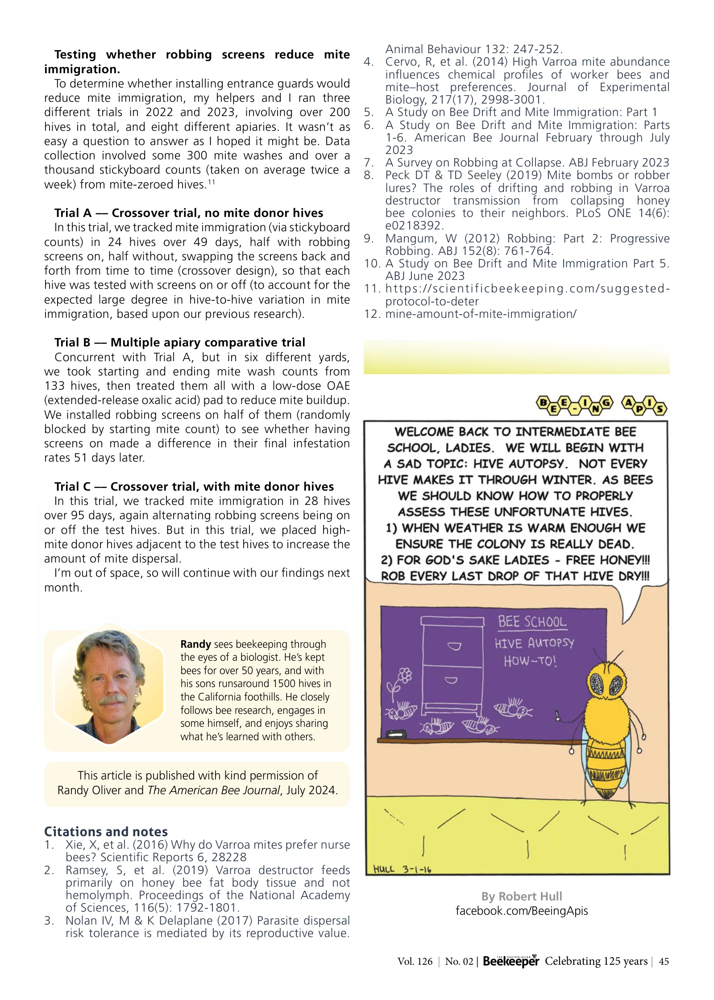

Testing whether robbing screens reduce mite
immigration.
To determine whether installing entrance guards would
reduce mite immigration, my helpers and I ran three
different trials in 2022 and 2023, involving over 200
hives in total, and eight different apiaries. It wasn’t as
easy a question to answer as I hoped it might be. Data
collection involved some 300 mite washes and over a
thousand stickyboard counts (taken on average twice a
week) from mite-zeroed hives.11
Trial A –– Crossover trial, no mite donor hives
In this trial, we tracked mite immigration (via stickyboard
counts) in 24 hives over 49 days, half with robbing
screens on, half without, swapping the screens back and
forth from time to time (crossover design), so that each
hive was tested with screens on or off (to account for the
expected large degree in hive-to-hive variation in mite
immigration, based upon our previous research).
Trial B –– Multiple apiary comparative trial
Concurrent with Trial A, but in six different yards,
we took starting and ending mite wash counts from
133 hives, then treated them all with a low-dose OAE
(extended-release oxalic acid) pad to reduce mite buildup.
We installed robbing screens on half of them (randomly
blocked by starting mite count) to see whether having
screens on made a difference in their final infestation
rates 51 days later.
Trial C –– Crossover trial, with mite donor hives
In this trial, we tracked mite immigration in 28 hives
over 95 days, again alternating robbing screens being on
or off the test hives. But in this trial, we placed high-
mite donor hives adjacent to the test hives to increase the
amount of mite dispersal.
I’m out of space, so will continue with our findings next
month.
This article is published with kind permission of
Randy Oliver and The American Bee Journal, July 2024.
Randy sees beekeeping through
the eyes of a biologist. He’s kept
bees for over 50 years, and with
his sons runsaround 1500 hives in
the California foothills. He closely
follows bee research, engages in
some himself, and enjoys sharing
what he’s learned with others.
Citations and notes
1. Xie, X, et al. (2016) Why do Varroa mites prefer nurse
bees? Scientific Reports 6, 28228
2. Ramsey, S, et al. (2019) Varroa destructor feeds
primarily on honey bee fat body tissue and not
hemolymph. Proceedings of the National Academy
of Sciences, 116(5): 1792-1801.
3. Nolan IV, M & K Delaplane (2017) Parasite dispersal
risk tolerance is mediated by its reproductive value.
Animal Behaviour 132: 247-252.
4. Cervo, R, et al. (2014) High Varroa mite abundance
influences chemical profiles of worker bees and
mite–host preferences. Journal of Experimental
Biology, 217(17), 2998-3001.
5. A Study on Bee Drift and Mite Immigration: Part 1
6. A Study on Bee Drift and Mite Immigration: Parts
1-6. American Bee Journal February through July
2023
7. A Survey on Robbing at Collapse. ABJ February 2023
8. Peck DT & TD Seeley (2019) Mite bombs or robber
lures? The roles of drifting and robbing in Varroa
destructor transmission from collapsing honey
bee colonies to their neighbors. PLoS ONE 14(6):
e0218392.
9. Mangum, W (2012) Robbing: Part 2: Progressive
Robbing. ABJ 152(8): 761-764.
10. A Study on Bee Drift and Mite Immigration Part 5.
ABJ June 2023
11. https://scientificbeekeeping.com/suggested-
protocol-to-deter
12. mine-amount-of-mite-immigration/
By Robert Hull
facebook.com/BeeingApis
Vol. 126 | No. 02 |
Celebrating 125 years | 45